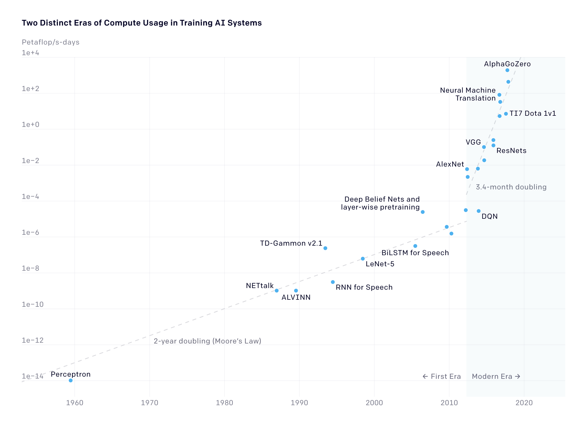

Maximal Computing #
This section introduces you to “maximal computing,” which refers to any computationally intensive work, including working with AI, blockchains, and big data.
Key Recommendations
Develop a clear understanding of when it is appropriate to use AI and distributed systems (e.g. blockchain) for your opportunity, challenge, or research question. When you do need to use maximal computing, consider using less-intensive processes like using smaller models and adapting existing infrastructures. Understand how to use efficiency metrics like T-scores, confusion matrices, accuracy, recall, Area under the ROC curve, LOGLOSS. Consider doing an Algorithmic Impact Assessment before developing or making substantial use of an AI tool. Engage critically with Big Tech, and examine the sustainability implications of mainstreaming deep learning AI in the future.
Problems of Proportionality #
How do we apply digital sufficiency, or digital sobriety, in an era of intense commercial and geopolitical competition around AI? Maximal computing systems are everywhere these days. For example, AI is used in content generation, search, speech recognition, translation, computer vision, and many other areas. In many parts of the world, AI is present within our homes, cars, mobile phones. New applications of AI are being implemented with the help of large publicly open datasets, available on the web (for example open crawl), which in turn are fed to models trained with huge hardware capabilities (training on GPUs and TPUs). Such maximal computing may help with adaptation to climate change; Gordon S. Blair gives the example of flooding resilience:
The challenges facing flood risk management practitioners are considerable as they make long-term decisions, e.g., about investments in flood defenses, with limited budgets. [...] Thanks to developments in digital technology, though, major changes are now anticipated, in particular related to the plethora of data becoming available (cf. big data)—from satellite imagery, from sensors deployed around catchments (cf. the Internet of Things), from detailed studies carried out by local authorities, from citizen science, and from mining data from the web.
Maximal computing is an important part of STEM research, but it is also growing within the arts and humanities (e.g. interest in generative models such as ChatGPT and Stable Diffusion). While it is well-recognised that global heating results from carbon and other greenhouse gases, broader AI communities have been slow to understand the relevance of our activities. As Knowles et. al (2021) note:
A serious and proportional response to the climate emergency would [...] involve constraining energy demand and mitigating drivers of infrastructure growth, and as a result, also consuming less energy. In real terms for computing, this means manufacturing fewer devices, storing and processing less data, generally managing with less compute power; and in terms of technical ambitions, scaling back the Internet of Things, resisting the temptation to throw AI and blockchain at every problem, and breaking free of the cycle of ever increasing demand for computation.
Maximal computing processes also often take place in the cloud, which means the carbon costs may also been less visible (see Question the Cloud section). So how do we decide whether a computational process is proportionate to the benefits it may create? In other words, when does it become appropriate to ’throw AI and blockchain’ at a problem? Can the underlying goals of computationally intensive work sometimes be met in different ways? And when we do decide to use computationally intensive processes, how can we optimise them from a climate and sustainability perspective?

Compute needed to train state-of-the-art models have risen exponentially since about 2012 (Source: OpenAI, https://openai.com/blog/ai-and-compute/.)
Some easy wins #
- Don’t use AI at all. What are you trying to achieve? Can it be accomplished in another way?
- Don’t use AI just for fun. Have fun of course, but also have a purpose in mind, one which would be sufficient even if it wasn’t fun.
- Use pre-trained models. There are so many to choose from!
- Share your models. If you do train a model, try to make it available for others to use. Support initiatives that help us to clearly document and to openly share the fruits of the carbon we have burned.
- Use smaller models. Larger models may yield better results, but often a smaller one will still do everything you need. You might also want to consider how you are framing ‘better’ results. For example, explore ChatGPT alternatives.
- Minimise use of multi-modal models. Prefer task-specific models over multi-purpose models to reduce energy consumption. Luccioni et al. (2023) write, “This is especially the case for text classification (on IMDB, SST 2 and Rotten Tomatoes) and question answering (on SciQ, SQuAD v1 and v2), where the gap between task-specific and zero-shot models is particularly large, and less so for summarization (for CNN-Daily Mail, SamSUM and XSum).”
- Minimise use of decoder-only models. There is some evidence suggesting seq2seq models are slightly less energy intensive.
- Try not to overtrain your model. You don’t need to keep teaching the model something it learned 50 steps ago.
- Explore scheduling, carbon-aware computing, and grid-aware computing. It may be possible to train your model when renewable energy is more plentiful.
- Weigh up the pros and cons of doing it in the Cloud vs. on-prem. Generally speaking, hyperscale datacentres can take advantage of economies of scale and access renewable energy more cheaply. However, if your institution has High Performance Computing (HPC) facilities that you can access, there may be greater opportunities for collaboration and optimisation, compared to renting your compute off Amazon, Google or Microsoft. Shao et al. (2022) review some metrics for data centre energy efficiency.
- Support responsible use with UX design. If you are building something, that may mean making it deliberately less fascinating and immersive. In this space, user engagement in itself is not a measure of success. For more information on minimal UX design, see the “Minimal Computing” section of this Toolkit.
- Raise awareness of the issue. Normalise responsible use of compute, hold big AI companies accountable, and advocate for better regulation of AI.
Then it gets complicated #
Consider Model Architecture Efficiency: Explore sequence-to-sequence models instead of decoder-only models for similar tasks, as they tend to be slightly less energy- and carbon-intensive.
1. Can it be deferred?: Does this computational process really have to be done now? Could it be done in five years’ time, when (if all goes according to plan) much more energy will be generated from renewable sources? Of course, research is often about winning the race, but maybe that’s an attitude that needs to shift.
2. What is its carbon impact? Monitoring maximal computing may help to identify where use is suboptimal or disproportionate to what the job is trying to achieve. How does your institution monitor IT energy use, whether on-prem or in the public cloud? What kind of data is collected, and who gets to see it? Maximal computing resources are often denominated in hours of core use. Can it instead be denominated in CO2e?
The AI Energy Score Leaderboard may help you make decisions, although at the time of writing it doesn’t include many of the major AI models out there, because of a lack of data.
There are often sustainability benefits from outsourcing to the hyperscale data centres of the cloud giants (e.g. Amazon, Google, Microsoft), but a loss of transparency.
Can you make sure your computation is done in a relatively green data centre?
See also the open source Cloud Carbon Footprint tool and associated resources.
It’s a good rule of thumb to switch to the most environmentally sustainable data centres you can. Of course, this is a complicated issue: as with any finite resource, when you use this clean energy, you may be preventing someone else from using it. The standard, upbeat answer is that switching to green data centres stimulates demand for more green data centres and more green energy to power and cool them. Yet the relationship between demand for green cloud services and global GHG emissions is far from straightforward. Green data centres don’t pop up overnight in response to extra demand. Then there is the fact that the actual carbon intensity of a given datacentre can vary significantly based on time of day and the season of the year. Jevons’ paradox might also be applicable: when technological progress increases the efficiency with which a resource is used, the rate of consumption of that resource sometimes increases, rather than decreasing. More broadly, degrowth and postgrowth may prove useful analytic lenses.
3. On what balance sheet(s) will the carbon impact appear? Will it be your own university or research institution (Scope 2), or some third party (Scope 3)? Are you happy with the way the reporting entity measures and discloses its carbon impact?
4. What are the potential benefits? Clearly, the underlying purpose of a project has bearing on how we assess its proportionality.
5. Do these benefits relate to sustainability? If so, you might decide to be a bit more lenient. Is your goal to optimize planting patterns for beleaguered pollinators, or to call out greenwashing in corporate disclosures at scale, or to tailor communications relating to famine relief? Or will the outcomes be unrelated to sustainability, or even maladaptive?
6. What are the broader ethical questions? Perhaps (as occasionally seems to happen sometimes in AI research) your goals are pure evil, only you haven’t noticed yet? Bringing in ethical considerations in an intensive way, early in the process, may help to decide when maximal approaches are appropriate. The ethics of AI is a very rich field. Prominent themes include bias (e.g. gender, race, language, class, geography, disability), opacity (is AI explainable? If so, who explains and who listens?), and broader considerations of justice. AlgorithmWatche’s SustAIn series connects AI ethics and AI sustainability. The Critical Algorithm Studies reading list and Zotero Library contain further reading on the politics and ethics of AI and algorithms more broadly. The Data Hazards project is developing labels that seek to communicate the risks involved in Data Science approaches, from concerns about privacy to high environmental cost: ‘Considering worst case scenarios is one part of this puzzle. Worst case scenarios free us from trying to predict the future: we’re not saying that something will happen’ (Thurlby, Natalie and Di Cara, Nina 2021).
7. How likely is it to succeed? This is a question you can ask at multiple scales, e.g. a project, a model, a query.
8. Is there still optimization that could be done?: How lean was the software building process / is the software? Are there ways to improve or to green it (i.e. reduce resource consumption)? Can computationally intensive jobs be scheduled for when the sun is shining and the wind is blowing?
Focusing on Natural Language Processing, Strubell et al. (2019) recommend “a concerted effort by industry and academia to promote research of more computationally efficient algorithms, as well as hardware that requires less energy” as well as the development and promotion of “easy-to-use APIs implementing more efficient alternatives to brute-force grid search for hyperparameter tuning, e.g. random or Bayesian hyperparameter search techniques” (Strubell, Ganesh, and McCallum 2019)
CodeCarbon can be embedded in Python code, to estimate emissions based on location, and recommend compute regions with lower carbon intensity for major cloud providers (AWS, Azure, and Google).
Xu et al. (2021) offer a survey of deep learning optimisation techniques, which they categorise into compact networks, energy-efficient training strategies, energy-efficient inference approaches, and energy-efficient data usage.
9. What about openness? Are you using maximal computing in ways that can benefit other researchers and creators?
Perhaps it's time for some new types of open licenses, that aim to influence the carbon impact of derivative software and applications? We are of course deeply in favour of open practice. Nonetheless, even here there may be negative considerations too. In some cases a project may be justified by its proportionate use of maximal computing, yet if shared inappropriately, will predictably result in unjustifiable variants.
Also check out the Foundation Model Transparency Index project.
10. What affordances are you creating?: If you are building something, does it encourage or enforce responsible use? Does your choice architecture and UI seek to maximise user engagement, or does it seek to encourage users to be careful and reflective?
There is not yet any standard or certification for responsible UX design for computationally intensive software. Maybe you could be the person to develop one?
Responsible AI Governance #
There is a rapidly evolving landscape of frameworks, tools, and platforms for developing and deploying AI responsibly. Most of these have yet to credibly integrate climate and environmental considerations. For example, at present, some Algorithmic Impact Assessment (AIAs) tools encourage assessment of the impacts of automated decision-making on ecosystems, while leaving out the environmental costs of developing and deploying the AI models themselves (or vice-versa); other tools invite reflection on those costs, without offering guidance on how to estimate or measuring these costs.
Measures of Efficiency #
Machine Learning models are can be measured using metrics like T-scores, confusion matrices, accuracy, recall, Area under the ROC curve, LOGLOSS (Minaee 2019). It is becoming more common to see the literature report on the electricity and environmental consumption required for advanced maximal computational research. Some useful environmentally relevant metrics to consider when planning your AI research projects are:
- Floating point operations (FPO), in FLOPS, GigaFlops
- Processor utilisation (%), % use of CPU/GPU/TPU
- Electricity consumption, in Watt Hours (Wh)
Lacoste et al. have been researching environmental impacts of AI, and have developed an online open source Machine Learning CO2 impact calculator. Lannelongue et al.’s Green Algorithms tool is another useful flexible tool for estimating carbon impacts, with a useful discussion. See also Dodge et al. (2022), ‘Measuring the Carbon Intensity of AI in Cloud Instances’ and Verdecchia et al. (2023), ‘A Systematic Review of Green AI’.
Red AI and Green AI #
“The vital first step toward more equitable and green AI is the clear and transparent reporting of electricity consumption, carbon emissions, and cost. You can’t improve what you can’t measure.” Jesse Dodge, Allen Institute for AI, coauthor of Green AI.
In 2020, the Association for Computing Machinery (ACM) suggested that to measure efficiency of AI models we need to report on the amount of work required. This includes the work to train the model, tune the hyperparameters and retrain the model repeatedly in however many iterations you use. Understanding the costs for a single document, the size of the data set and the steps in your pipeline (such as preprocessing, cleaning, and enriching) helps you to comprehend the total work required, and thus allows you to optimise at specific points in your pipeline. Red AI refers to the dominant approach, that seeks to improve results through massive computational power without regard to environmental impact. Striving to “treat efficiency as a primary evaluation criterion alongside accuracy” is what Schwartz et al. call Green AI.
Contrasting with much of the evidence assembled here, this 2022 preprint offers an optimistic assessment of future model training carbon impacts, and proposes some best practices (selecting sparser models, using optimised processors such as TPUs and recent GPUs, using hyperscalers rather than on-prem data centres, and choosing data centres powered by the cleanest energy).
Understanding Cloud emissions #
It also makes a big difference where (and when) you train and deploy your model. Climatiq offers a series of introductory articles to Cloud emissions:
- Measuring greenhouse gas emissions in data centres
- The role of Amazon Web Services, Azure, and Google Cloud Platform
- Approaches to assessing emissions
- Approaches to reducing Cloud emissions
Datacentre sustainability is strongly influenced by location, and the local availability of green electricity. Electricity Maps is an open source visualization project to help understand the climate impacts of energy use.
The Science Based Targets initiative sectoral guidance for ICT includes a focus on datacentres. To get a rough understanding of where the Cloud’s emissions fit into ICT emissions as a whole, the order goes (from largest impact to smallest): manufacturing user devices, running user devices, running data networks, running data centres, manufacturing data networks, manufacturing data centres. This doesn’t include crypto though. (We’d like to include some more granular recent data here, if you have any to add).
The environmental pledges and policies of the cloud giants (Microsoft, Amazon, and Google/Alphabet) deserve scrutiny. At the time of writing, the differences between them are significant, but none deserves enthusiastic praise.
- Amazon Employees 4 Climate Justice
- Clouded: Uncovering the Culture of the Cloud and film (2022)
- Clouded II (2024)
- Corporate Climate Responsibility Monitor (2023)
- Carbon Market Watch
- ‘Clouds of Carbon’ in Jisc, Exploring Digital Footprints (2022)
- News article focusing on Latin America
- GEC’s guide for procurers of cloud services (2019)
Learning about Cloud emissions will quite quickly take you into the realm of energy generation and the power grid. For example, the 24/7 carbon-free energy approach, supported by a UN compact, appears to be a big improvement on previous highly financialised ‘annual matching’ approaches. The grid-aware computing approach also seems to improve substantially on carbon-aware computing.
FinOps and GreenOps #
Within business, there is already a considerable body of theory and practice around cloud optimisation, associated with the FinOps approach. FinOps actions taken to reduce cloud spend (e.g. reservation management, data lifecycle management, continuous rightsizing) often have the unintended consequence of reducing carbon emissions too (although that’s not always the case).
Interestingly, FinOps is also not just about cost in a narrow sense, but about multidimensional value (for example, the “Iron Triangle” of fast, cheap, and good service). FinOps practitioners are interested in the various trade-offs and co-benefits of using the Cloud in different ways.
This means there is good potential to integrate sustainability (and even climate justice) into FinOps practice. By bringing together financial, IT, and sustainability teams under a common objective, a FinOps Centre of Sustainable Excellence, or a GreenOps Centre of Excellence, might allow these traditionally siloed disciplines to collaborate and share expertise.
However, the GreenOps approach is still emerging. Sustainability is not yet a prominent theme in FinOps literature. As you might expect, FinOps also leans techno-solutionist, so there is potential for tensions with perspectives such as digital sobriety, Minimal Computing, or degrowth.
Major cloud providers offer tools that anticipate a FinOps perspective, including AWS Trusted Advisor, Microsoft Azure Cost Management, GCP Cost Management.
Other terms include DevGreenOps (Greenspector) and DevSustainOps (Eric Zie, Decarbonise the Digital).
Further reading:
- Filippo Vanara, IDC, ‘Rise of FinOps and GreenOps – The Importance of These Strategies in 2023 and Beyond’ (2023).
- Greenspector, How do you go from DevOps to DevGreenOps?
- GreenPixie, What is GreenOps?
- Greenly, FinOps and GreenOps, How Do They Relate?
- The New Stack, What is GreenOps? Putting a Sustainable Focus on FinOps (2023)
Quantum computing #
This isn’t something we have looked into yet, but we would appreciate any evidence or resources. A cursory exploration of the intersection of quantum computing and climate suggests quite a lot of positive framings, although also quite clearly some significant hype. Here’s one interesting extended blog post:
Pinto, Karan, ‘Quantum Tech for Better Climate: A Thesis’, Entangle Quantum (2022)
Mini case study #
GPT-n workshops case study #
Jo Lindsay Walton
In some recent workshops to introduce participants to GPT-n text generators, participants fine-tuned a pre-trained model using texts of their choosing.
There were good pedagogic reasons to let everyone choose their own input text, e.g. from Gutenberg, for the fine tuning: it turns the activity into a more exciting experiment. It also made sense for me to do the activity myself, because (1) it's easy to forget details when you're describing something from memory and notes, and (2) I know from experience that certain fine-tuning texts will "work well," so we would have at least one interesting output to discuss at the end.
But in the short time available, participants often chose arbitrary and / or "obvious" input texts (e.g. Shakespeare, or an author they were primed to choose because they had been mentioned earlier in the workshop). Likewise, pushed for prep time, the workshop leader realised they were tending to use the same input texts again and again. Furthermore, we would generate hundreds of pages of text, and then only browse the first few - and never use the rest for anything.
My new rule of thumb: if I am running a computationally intensive process for educational or demo purposes, do so in a way that doubles as research (in a loose sense of "research").
For the latest iteration of the workshop we have:
- Explicitly included discussion of carbon costs.
- Used a recording of myself doing the fine-tuning and text generation.
- Created a shared folder of potential fine-tuning inputs which I am interested in for various reasons - participants could choose one of these or pick their own.
- Built in time to discuss actual immediate use cases of text generation, and what questions we might ask of the output (and how many pages we needed to generate).
In some ways the workshop felt clunkier, and I had to cut some content which I liked. But it still felt worth it to include very basic sustainability considerations.
If I run similar workshops in the future I hope to:
- Find out more about the actual carbon footprint of these processes.
- Explore a format where small groups collaborate, running just one fine-tuning per group.
- Explore choosing from a variety of already fine-tuned models, rather than running new fine-tunings.
- Seek out others who may already want synthetic texts based on specific fine-tuning inputs, and offer to do this for them as part of the workshop.
- Continue to think about proportionality, and if the carbon cost does seem too high, then replace the workshop with something else entirely.
I don't think that the energy savings will be extensive. When I think of all the users of art AIs, generating thousands and thousands of images just out of curiosity or a playful compulsion, it feels like a drop in the ocean. But it also feels important to model responsible behaviour. A minimal set of principles for using AI to generate text or art might involve:
- Spend the time to articulate what I am trying to do and why (not just “to try it out” or “to see what happens”).
- Whenever possible, combine different purposes (try out an experimental approach in a way that may also contribute to a particular project, etc.).
- Whenever possible, work in an open and shared way, so that others can benefit from my use of the AI.
Adapting existing infrastructures #
Large organisations such as Higher Education Institutes (HEIs) or other public sector organisations require complex IT infrastructure to satisfy their diverse stakeholder requirements. For example, a university will typically have a central IT service offered out across different academic departments but some departments will also run their own more specialised services. Service catalogues provide a way for organisations to describe what technologies and services they support and could be a good starting point to communicate their environmental footprints. This may then be used to raise awareness or feed into data management plans when describing the infrastructure requirements for a new research project. A simple colour-coded gradient scheme could be used to help categorise the technologies and services similar to the ones you see on electrical appliances (or other schemes).
As more organisations shift their infrastructure from always on Virtual Machines (VMs) to more on-demand compute services we should start to see benefits in energy consumption, especially in large organisations that have budgeted for VMs that might run with minimal use for periods of time. We will move to a model that is more elastic and can scale horizontally to accommodate changes in demand. Cloud providers such as Amazon have started to provide their own carbon footprint calculators.
We are also seeing a shift towards using Content Delivery Networks (CDNs) which can provide in-memory caches of popular resources avoiding the requirement to do expensive transfers across backend systems. Understanding the computation or energy benefits from these caches would provide useful insight.
Within software development projects it is typical to see CI/CD pipelines being deployed. We need to raise awareness of the impacts of continually triggering what might be a resource intensive process.
Further reading #
Blair, Gordon S. ‘A Tale of Two Cities: Reflections on Digital Technology and the Natural Environment’. Patterns 1, no. 5 (14 August 2020). [https://doi.org/10.1016/j.patter.2020.100068].
Kazansky, B., Karak, M., Perosa, T., Tsui, Q., Baker, S., and The Engine Room. (2022). At the confluence of digital rights and climate & environmental justice: A landscape review. Available at: [https://engn.it/climatejusticedigitalrights]
Knowles, Bran, Kelly Widdicks, Gordon Blair, Mike Berners-Lee, and Adrian Friday. ‘Our House Is On Fire:The Climate Emergency and Computing’s Responsibility’. Communications of the ACM, 2 December 2021. https://eprints.lancs.ac.uk/id/eprint/162995/.
Schwartz, Roy, Jesse Dodge, Noah A. Smith, and Oren Etzioni. ‘Green AI’. Communications of the ACM 63, no. 12 (17 November 2020): 54–63.
Shervin Minaee, 20 Popular Machine Learning Metrics. Towards Data Science, 28 Oct 2019. [Accessed 2022-04-06].
Shao, Xiaotong, Zhongbin Zhang, Ping Song, Yanzhen Feng, and Xiaolin Wang. 2022. ‘A Review of Energy Efficiency Evaluation Metrics for Data Centers’. Energy and Buildings 271 (September): 112308. https://doi.org/10.1016/j.enbuild.2022.112308.
Strubell, Emma, Ananya Ganesh, and Andrew McCallum. 2019. ‘Energy and Policy Considerations for Deep Learning in NLP’. In Proceedings of the 57th Annual Meeting of the Association for Computational Linguistics, 3645-50. Florence, Italy: Association for Computational Linguistics. https://doi.org/10.18653/v1/P19-1355.
Tremayne-Pitter, Daniel (dir.) (2022). Clouded: Uncovering the Culture of the Cloud Documentary film.
Xu, Jingjing, Wangchunshu Zhou, Zhiyi Fu, Hao Zhou, and Lei Li. 2021. ‘A Survey on Green Deep Learning’. https://doi.org/10.48550/ARXIV.2111.05193.